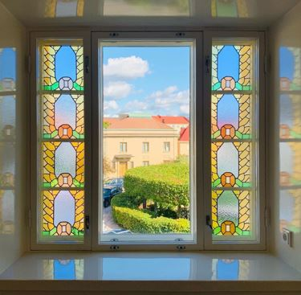
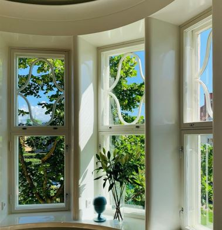
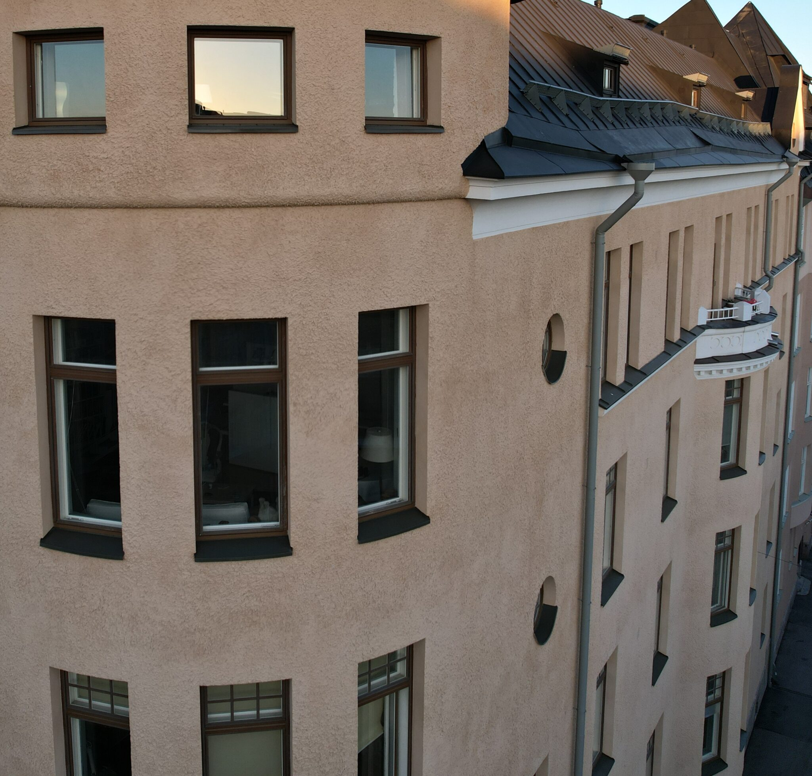

Restoration and replacement of windows and doors
We carry out the restoration and replacement of windows and doors professionally. Original windows in listed and valuable properties are preserved wherever possible - we renovate and draught-proof them to meet current energy efficiency requirements.
Restoring old, quality windows is often the better option both economically and aesthetically compared to replacement. We clean, draught-proof and paint windows in keeping with their original appearance. Where required, we replace individual components such as seals, latches and hardware.
When restoration is no longer cost-effective, we replace the windows and doors entirely. We carry out installation works neatly, minimising disruption to residents. Sizing and model selection for new windows is carried out in collaboration with the client, taking into account the property's architectural character and any conservation requirements.



We have accumulated experience in renovation construction over three decades. Our specialist expertise includes terrazzo rendering, textured rendering, and plaster and concrete ornaments.
We carry out renovation contracts comprehensively, from planning through to warranty inspections. The scope is tailored to the client's wishes and needs.
In renovation construction, responsible and reliable operations are central. Over the years we have developed cost-efficient operational models that form the foundation of our service quality.
Our operations are focused on larger facade renovation contracts for properties and housing companies in the Helsinki metropolitan area. We commit to a high-quality and long-lasting result.